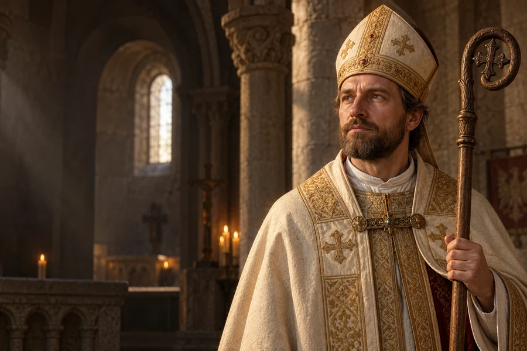

Odwaga spotkania
W rozmowie z osobą o odmiennych poglądach spróbuj najpierw zrozumieć jej doświadczenie.
ok. 956–997
Obchód liturgiczny: 23 kwietnia
Biskup Pragi, misjonarz i główny patron Polski.
Biskup Pragi i misjonarz, którego śmierć w Prusach oraz pamięć o jego grobie w Gnieźnie wpłynęły na dzieje Kościoła w Polsce.
Poznaj historię jego życia →Wiara przekazywana innym potrzebuje odwagi, ale też uważnego szacunku dla ich historii.
Refleksja redakcji W Modlitwie.Przychodzi na świat w Czechach.
Zostaje biskupem praskim.
Przebywa we wspólnocie benedyktyńskiej.
Wyrusza do Prusów z ziem polskich.
Ginie 23 kwietnia.
Otton III pielgrzymuje do jego grobu.

Współczesne wyobrażenie artystyczne.Około 3 min czytania · 5 rozdziałów
Wojciech urodził się około 956 roku w czeskiej rodzinie Sławnikowiców. Został przygotowany do życia duchownego. Żył w czasie, gdy chrześcijaństwo umacniało swoją obecność w Europie Środkowej, a stosunki między rodami, władcami i biskupami bywały napięte. O jego życiu opowiadają dawne żywoty; nie wszystkie ich szczegóły można dziś sprawdzić z jednakową pewnością.
Rodzina Sławnikowiców należała do ważnych rodów czeskich. Współczesna wiedza o Wojciechu opiera się między innymi na żywotach pisanych po jego śmierci. Takie źródła przekazują pamięć wspólnoty, ale wymagają ostrożności przy odtwarzaniu szczegółów życia sprzed ponad tysiąca lat.
Uroczystości patronalne w Gnieźnie skupiają wspólnoty z różnych regionów. Wspominając postać misjonarza, Kościół powraca do początków swojej organizacji na ziemiach polskich i do europejskiego kontekstu tych wydarzeń. W źródłach obok faktów historycznych występują również późniejsze opowieści.
W 983 roku Wojciech został biskupem Pragi. Jego obowiązki obejmowały troskę o wspólnotę oraz głoszenie zasad chrześcijańskiego życia. Posługa przebiegała w warunkach sporów i trudnych relacji z częścią otoczenia. Dwukrotnie opuszczał Pragę. W Rzymie związał się z życiem monastycznym i wstąpił do wspólnoty benedyktyńskiej.
Jako biskup działał w środowisku, w którym normy życia chrześcijańskiego dopiero się umacniały. Spory z otoczeniem sprawiły, że wyjechał z Pragi. Pobyt we wspólnocie monastycznej w Rzymie wprowadził do jego biografii doświadczenie modlitwy i życia według reguły zakonnej.
Wojciech podejmował działalność religijną w różnych częściach środkowej Europy. Przybył także do państwa Bolesława Chrobrego. Stamtąd wyruszył na misję do Prusów. Celem wyprawy było głoszenie Ewangelii ludności żyjącej poza ówczesnymi strukturami Kościoła. Warunki takiej podróży były niepewne, a spotkanie z miejscową społecznością okazało się dramatyczne.
Droga Wojciecha pokazuje, jak silnie były połączone wczesnośredniowieczne Czechy, Rzym i ziemie polskie. Zmiany miejsca pobytu wynikały zarówno z obowiązków kościelnych, jak i z napięć politycznych. Ostatecznie podjął wyprawę na teren zamieszkany przez Prusów.
Wojciech zginął 23 kwietnia 997 roku podczas misji w Prusach. Pamięć o jego śmierci i relikwiach szybko nabrała znaczenia dla młodego Kościoła w Polsce. Miejscem szczególnej czci stało się Gniezno. W roku 1000 do grobu Wojciecha pielgrzymował cesarz Otton III; wydarzenie to wiąże się z powstaniem metropolii kościelnej w Gnieźnie.
Śmierć misjonarza stała się początkiem jego kultu. Pamięć o grobie w Gnieźnie łączy się z pierwszymi strukturami metropolii kościelnej. Wydarzenia te należą do istotnych punktów historii Polski, choć wiele szczegółów misji znamy z późniejszych narracji.
Wojciech jest czczony jako biskup, męczennik i jeden z głównych patronów Polski. Jego uroczystość przypada w Polsce 23 kwietnia, choć w konkretnym roku obchód może zostać przeniesiony. Do Gniezna od stuleci przybywają pielgrzymi. Historia świętego pozostaje związana nie tylko z początkami polskiej organizacji kościelnej, lecz także z Czechami, Rzymem i ziemiami dawnych Prusów.
Co roku w Gnieźnie odbywają się uroczystości ku jego czci, a do katedry przybywają pielgrzymi. Wojciech pozostaje postacią wspólną dla historii kilku narodów Europy Środkowej; pamięć o nim przekracza granice współczesnych państw.
W rozmowie z osobą o odmiennych poglądach spróbuj najpierw zrozumieć jej doświadczenie.

Poznaj historię kościoła lub wspólnoty ważnej dla Twojej miejscowości.

Pomyśl o jednym sposobie, w jaki Twoje postępowanie może wyrazić wyznawane wartości.
Ojcze nasz, któryś jest w niebie, święć się imię Twoje; przyjdź królestwo Twoje; bądź wola Twoja jako w niebie, tak i na ziemi. Chleba naszego powszedniego daj nam dzisiaj; i odpuść nam nasze winy, jako i my odpuszczamy naszym winowajcom; i nie wódź nas na pokuszenie, ale nas zbaw ode złego. Amen.
Tradycyjny tekst modlitwy; utrwalony polski wariant.Ojcze nasz →